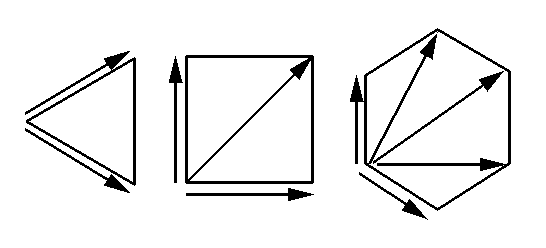

|
CCP4i: Graphical User Interface |
| MIR Tutorial Bath - Patterson search |
 |
BACK TO INDEX |  |
Peaks in the Patterson function occur at the endpoints of vectors between all pairs of heavy atom sites in a unit cell of the crystal.
Consider one site and its general equivalent positions (g.e.p.'s) related by space-group symmetry. Vectors between symmetry-related atoms are Harker vectors.
For example, for space group P21 (21 axis along b) we have:
g.e.p. 1 : x, y, z g.e.p. 2 : -x, ½+y, -z u,v,w = 2x, ½ , 2z
Here, (x,y,z) are the site coordinates and (u,v,w) are Patterson coordinates. In P21 (unique b) the Harker vector always occurs in the section defined by v=½, regardless of the site coordinates. The section v=½ in the Patterson for P21 is a Harker section, generated by the 2-fold screw axis along b (= [010]).
In general, N equivalent positions in a primitive (P) cell give N-1 Harker vectors; for the purposes of the present discussion, lattice centring C, I, R etc. may be ignored.
| But in high symmetry space groups with 3, 4 or 6-fold axes, some of the Harker vectors are related to each other by the rotation symmetry of the Patterson. |  |
Consequently, both a 2- and a 3-fold axis generate only 1 unique Harker vector; a 4-fold axis generates 2, and a 6-fold 3 vectors. In high symmetry space groups, the number of unique Harker vectors that need be checked will therefore be less than N-1.
The relationship between the rotation or screw axis and the corresponding Harker section(s) should be clear:
The Harker section(s) is/are always perpendicular to the generating rotation or screw axis.
A rotation axis always generates all its Harker vectors in the same zero-level Harker section. For example, a 2, 3, 4, or 6-fold axis along c (= [001]) generates a single Harker section w=0. Similarly, 2-fold axes along the diagonals [110] and [-110] generate zero-level Harker sections u+v=0 and u-v=0 respectively.
A 21 (or 42 or 63) screw axis generates a Harker section at ½ of the unit cell length along the axis; a 31 or its enantiomorph 32 (or 62/64) screw axis generates a Harker section at 1/3; a 41/43 screw generates 2 Harker sections at ¼ and ½; and a 61/65 screw generates 3 Harker sections at 1/6, 1/3 and ½. In some cases (i.e. 31/32, 62/64, 41/43 and 61/65) other Harker sections more than ½ along the axis are also generated, but they are related by symmetry inversion to those given, and need not be examined.
Note that rotation and screw axis symmetry elements are the only ones that need be considered for non-centrosymmetric space groups; these are the only space groups in which "handed" molecules (i.e. the majority that are of biological origin) can crystallise.
Taking another example, in space group P21212 there are 3 Harker vectors, each on a different section:
| G.e.p. | Symmetry element | Harker vector | Harker section |
|---|---|---|---|
| x,y,z | 1 | - | - |
| -x,-y,z | 2 || c | 2x,2y,0 | w = 0 |
| ½-x,½+y,-z | 21 || b | ½+2x,½,2z | v = ½ |
| ½+x,½-y,-z | 21 || a | ½,½+2y,2z | u = ½ |
The Patterson function can be defined as the convolution of the electron density function with a copy of itself symmetry inverted through the origin; alternatively the Patterson function can be viewed as the autocorrelation of the electron density function. The reverse process of extracting the electron density information from the Patterson is therefore one of deconvolution.
The Patterson function has the same unit cell and lattice centring as the crystal; it also has the same rotation axes, but each screw axis in the crystal becomes the corresponding rotation axis in the Patterson (e.g. a 21 becomes a 2). Finally, the Patterson has additional inversion centre symmetry. As a consequence, it is not possible to derive unambiguously the site coordinates for all but the first site using the Harker vector(s) alone.
Taking the example in P21 again:
| ( 2x, ½, 2z ) = | ( u, v, w ) | or | ( -u, -v, -w ) | |
| or | ( u+1, v, w ) | or | ( -u+1, -v, -w ) | |
| or | ( u , v, w+1 ) | or | ( -u , -v, -w+1 ) | |
| or | ( u+1, v, w+1 ) | or | ( -u+1, -v, -w+1 ) |
Therefore:
| ( x, y, z ) = | ( u/2 , ?, w/2 ) | or | ( -u/2 , ?, -w/2 ) | |
| or | ( u/2+½, ?, w/2 ) | or | ( -u/2+½, ?, -w/2 ) | |
| or | ... |
(The "?" indicates that for this space group the y coordinate is arbitrary.)
In the case where there are several Harker vectors per site, it is necessary to correlate the information from all the Harker sections.
Note that the possible choices for (x, y, z) are all equally valid, but are not related by space group symmetry. In the general case two types of ambiguity arise:
There is an arbitrary possible origin shift for the site coordinates; this depends on the point group of the crystal:
| crystal system | point group | origin shift options |
|---|---|---|
| Triclinic | 1 | x, y and z arbitrary. |
| Monoclinic (unique b) | 2 | ½ in x and/or z; y arbitrary. |
| Orthorhombic | 222 | ½ in x and/or y and/or z. |
| Trigonal | 3 | 1/3 in x and 2/3 in y, or vice versa; z arbitrary. |
| 312 | 1/3 in x and 2/3 in y, or vice versa, and/or ½ in z. | |
| 321 | (0,0,½) | |
| Tetragonal | 4 | ½ in x and y; z arbitrary. |
| 422 | ½ in x and y, and/or ½ in z. | |
| Hexagonal | 6 | z arbitrary. |
| 622 | (0,0,½) | |
| Cubic | 23 | (½,½,½) |
| 432 | (½,½,½) |
Also for space groups F222 and F23 there is an additional possible shift of (¼,¼,¼).
The handedness of the site coordinates, i.e. (-x, -y, -z) instead of (x, y, z), may be chosen arbitrarily.
The automatic Patterson search programs work in a different fashion from that described above; basically they consider each grid point in the asymmetric unit of the crystal to be a putative heavy-atom site, and compute a score based on the Harker and/or cross vectors for that site. This score is placed at the grid point and a map similar to an electron density map generated, that can then be searched for peaks.
To find the first heavy-atom site a symmetry function is calculated: using Harker vectors only, for every point in the asymmetric unit of the crystal, the corresponding Patterson density value(s) are obtained. If there is only 1 Harker vector, as in P21, then its density value is used as the score; otherwise the density values for all the Harker vectors are combined into a single score. The method of combination is critical; three possibilities are minimum, sum, or harmonic mean.
These are self-explanatory: i.e. the minimum function takes the minimum of all the values as the score. The minimum function has the disadvantage that it is too discriminating: if the Patterson is very noisy one of the Harker vectors may by chance have a low peak density value, so the site may not appear in the map where it should. Conversely the sum function tends to have low discriminatory power: if one Harker vector accidentally has a high value, but the others are absent, the map may show a site where there is none. The harmonic mean (reciprocal of the mean of the reciprocals of the density values) seems to strike a happy medium between the two.
Once the first site for a particular derivative is chosen either manually from the Harker vectors, or automatically from the symmetry function, that site fixes the origin for all the sites in that derivative. This means that second and subsequent sites for the derivative cannot be obtained by application of the same method, because there is then no guarantee that the subsequent sites will be chosen with the same origin.
The automatic Patterson search procedure works by obtaining the second and subsequent sites one at a time in stepwise fashion. Both Harker vectors for the site currently being searched for, and cross vectors (vectors between sites not related by space-group symmetry) between the current site and all the previously determined sites are used to calculate a superposition function. The name derives from a manual method of deconvoluting the Patterson, by superposing shifted copies of itself. As before, the Patterson densities corresponding to all the vectors, both Harker and cross, are combined with a minimum, sum or harmonic mean function to produce a score for each grid point in the asymmetric unit of the crystal in turn.
Consider the case of 2 sites in P21:
| Site 1 | Site 2 | Cross vector |
|---|---|---|
| ( x1, y1, z1 ) | ( x2, y2, z2 ) | ( x1-x2, y1-y2, z1-z2 ) |
| ( -x2, ½+y2, -z2 ) | ( x1+x2, ½+y1-y2, z1+z2 ) |
Provided the sites lie at completely general positions, there will always be exactly N (the number of g.e.p.'s in the P cell) unique cross-vectors for every pair of unique sites; all other cross vectors are related to these by the Patterson symmetry, and therefore do not need to be checked.
Now there is no ambiguity about the co-ordinates of site 2, because if it were e.g. (-x2, -y2, -z2 ) then the cross vector would be ( x1+x2, y1+y2, z1+z2 ) which is not related by symmetry to the actual cross vectors. So the superposition function has only space group symmetry; the relative origin and hand ambiguities are removed.
Note that there still remains the problem of ensuring that the sites in any derivatives subsequently solved are on the same origin and hand as the first one, and also that the absolute hand of the complete set of sites has been chosen correctly; these problems are best dealt with later at the refinement stage.
Takes an isomorphous difference Patterson computed by FFT and computes either a symmetry function map if no site coordinates are input, or a superposition function map if one or more sites are input. There are options for minimum, sum or harmonic mean function. A peak search program (e.g. PEAKMAX) should then be used to look for possible sites in the map. The program also has an option to calculate all vectors (Harker and cross) given a set of sites, and print a list of the corresponding Patterson density values.
An automated version of VECSUM with simpler input and with options for non-crystallographic symmetry.
More automated than VECSUM, and with simpler input, but less flexible (e.g. restricted to the minimum function). Direct methods phasing can also be used to locate the heavy atoms. SHELX is not part of CCP4 and must be obtained separately.
|
BACK TO INDEX | |